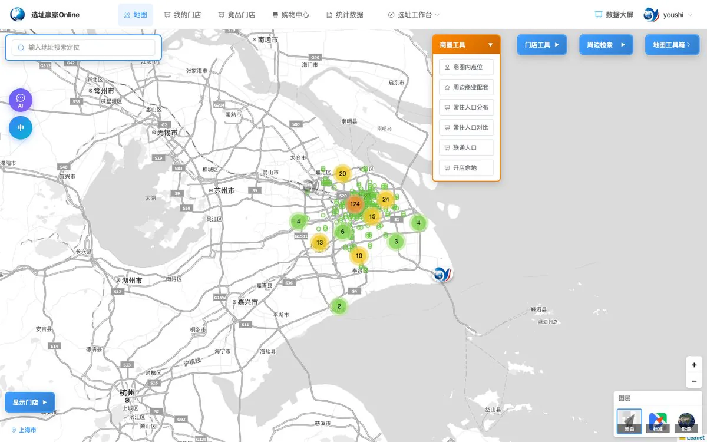
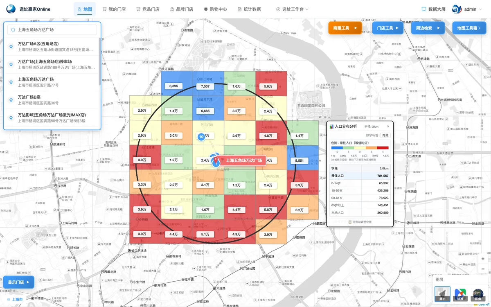
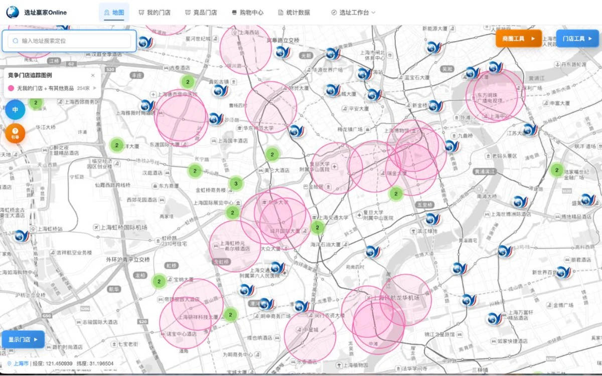
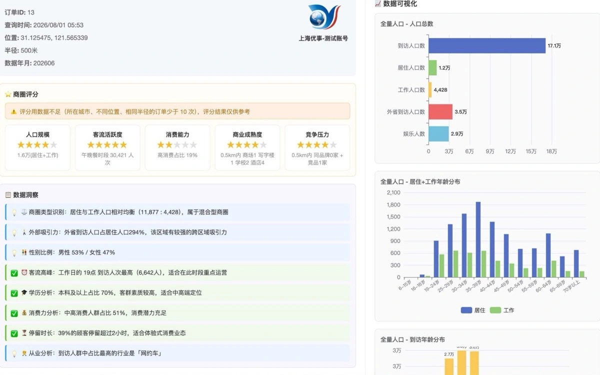
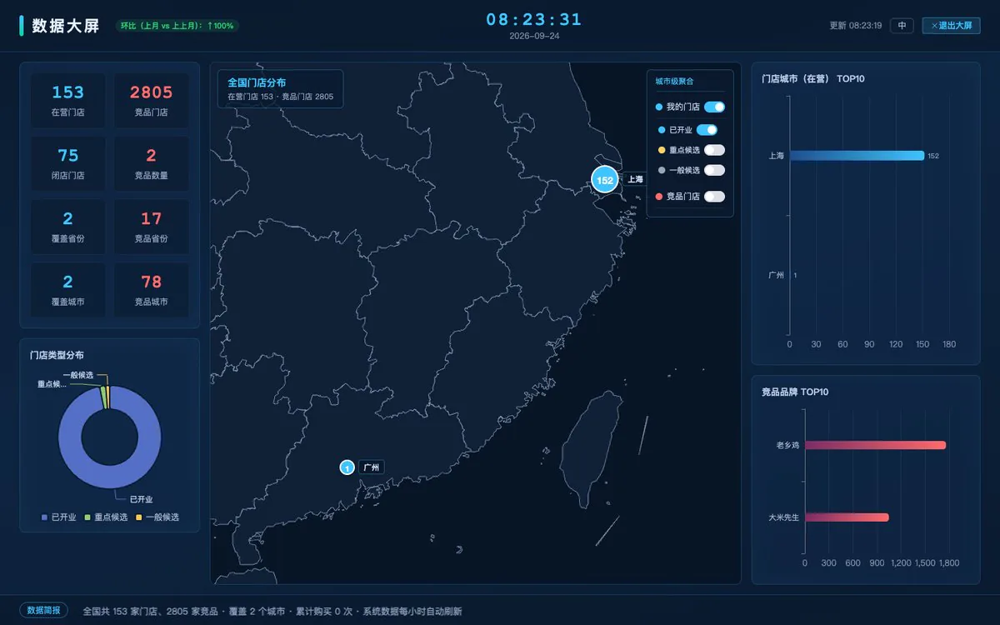
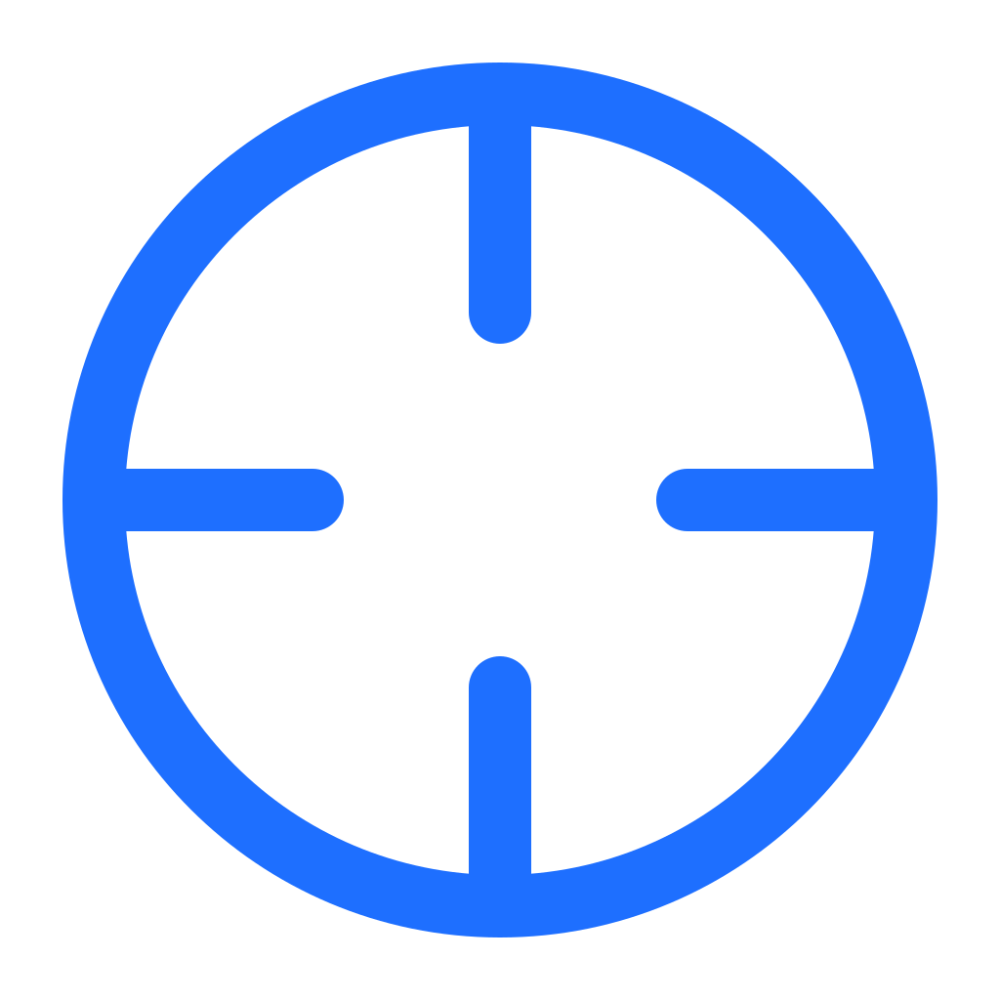
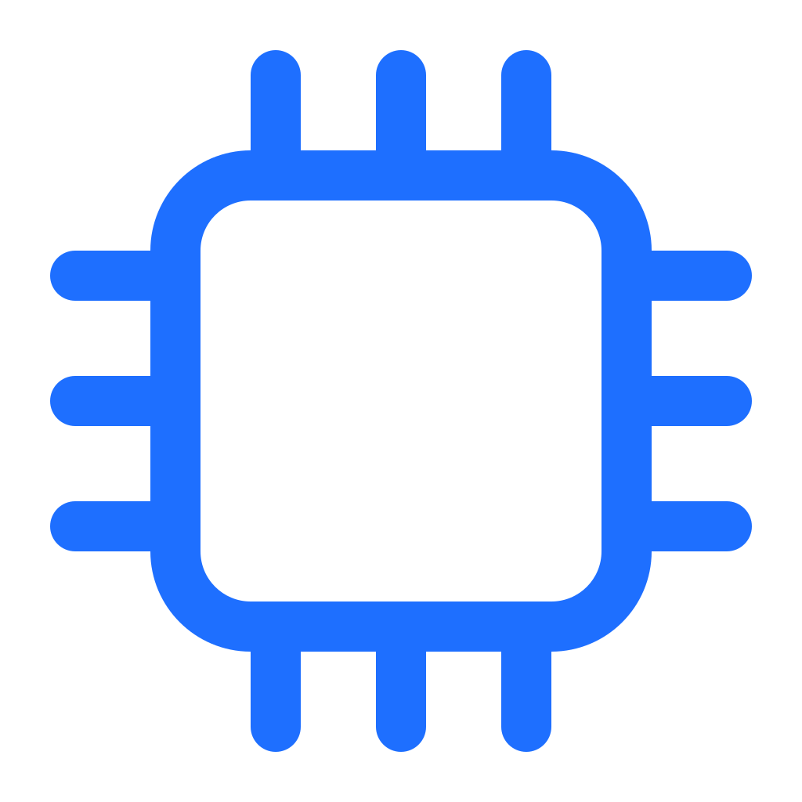
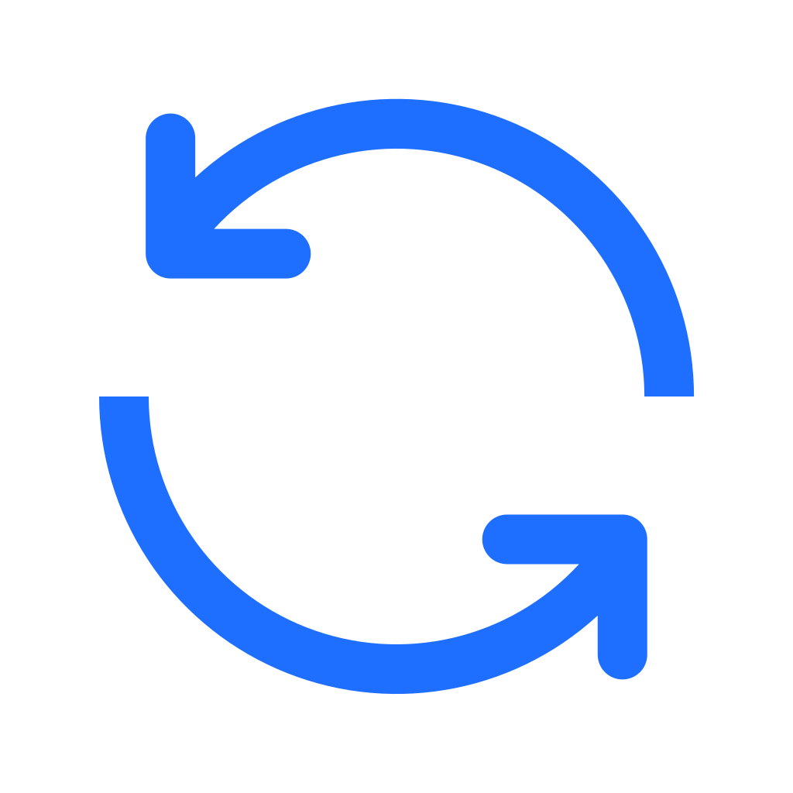

下面是线上环境的真实界面。点任一步，看这一步在界面上做什么。





从人口到竞争，从单店体检到全国大盘。
半径圈选或整城铺图，1km 网格 6 档着色，档位区间可自定。
按真实路网算 N 分钟能到哪，不再是半径圆，边界可微调。
自家蚕食、竞争强度、竞品追踪，重叠率直接画在图上。

自我蚕食、竞品密度、数据完备度，红黄绿灯排序。
录入真实销售，L1 类比→L2 回归→L3 机器学习随样本升级。

30+ 品牌映射，输出结论、客群匹配与风险提示。
门店与竞品全国分布一屏投出，KPI 实时统计。

同址异码、双店型自动识别，合并可一键恢复。
地图负责告诉你店在哪，选址赢家负责判断该不该开在这。
| 维度 | 通用地图 App | 选址赢家Online |
|---|---|---|
| 数据归属 | 门店存在个人账号里，换人换机就散了 | 存在自己库里，随时可导出，账号之间互相隔离 |
| 分析能力 | 能看热力图，算不出半径内到底多少人 | 按半径聚合、多条件阈值筛选，一次算出候选区域 |
| 竞品计数 | 一家家搜，数量靠眼数 | 内置竞品库按半径自动计数，自家门店蚕食加权 |
| 决策依据 | 看到位置和路线，判断靠经验 | 开店余地、竞争强度、AI 建议与销售预测 |
| 成果输出 | 截图贴进 PPT，改一次重来一次 | 一键导出 Excel / PDF，分析结果可复用 |
| 团队协作 | 一个账号大家共用，谁改的说不清 | 多账号 + 集团 / 子公司数据隔离与权限 |
不需要。浏览器打开就能用，Windows、macOS 与移动端都支持，无需安装任何客户端。
接入运营商级人口大数据，经匿名化处理，按 1km 网格统计人口量级与人群结构，用于判断区域的量级与分布趋势。
按账号隔离，其他账号看不到你的门店明细；平台做区域统计时只使用匿名坐标，不展示门店名称、地址与销售数据。
可以。按统一模板导出 Excel / PDF，包含统计图表与地图截图，格式专业，可直接用于内部汇报或客户提案。